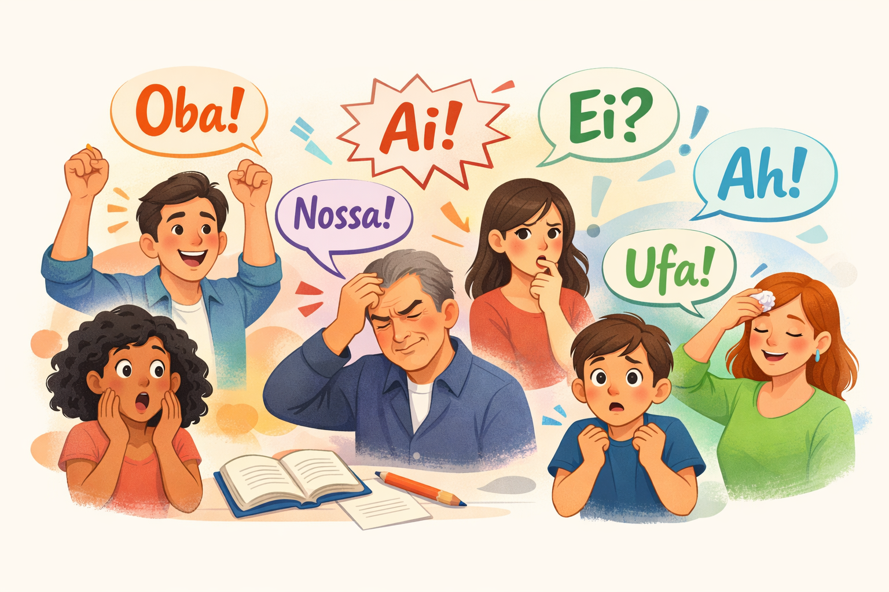

Interjeições da Língua Portuguesa: o que são, tipos, usos e exemplos explicados de forma simples
As interjeições da Língua Portuguesa são palavras ou expressões invariáveis usadas para manifestar emoções, sentimentos, reações, sensações ou estados de espírito, como alegria, dor, surpresa, medo, dúvida, alívio, reprovação, entre outros.
Essas palavras são muito frequentes na linguagem oral e em textos informais, diálogos, histórias em quadrinhos e narrativas, pois tornam a comunicação mais expressiva, natural e próxima do leitor.
O que são interjeições?
A interjeição é uma palavra ou locução que exprime, de forma espontânea, emoções ou reações do falante. Ela pode formar uma frase sozinha e não exerce função sintática em relação aos demais termos da oração.
Exemplo:
✔️ Ai! Isso doeu.
✔️ Oba! Conseguimos!
Nos exemplos acima, as interjeições ai e oba expressam, respectivamente, dor e alegria.
Características das interjeições
As interjeições apresentam as seguintes características:
- São palavras invariáveis;
- Podem aparecer isoladas;
- Expressam emoções, sentimentos ou reações;
- Não mantêm relação sintática com outras palavras;
- São comuns na linguagem oral e em textos informais.
Classificação das interjeições
As interjeições podem ser classificadas de acordo com o sentido ou sentimento que expressam.
1. Interjeições de alegria ou satisfação
Expressam felicidade, entusiasmo ou contentamento.
- Oba! Passamos no exame.
- Eba! Hoje é feriado.
2. Interjeições de tristeza ou dor
Indicam sofrimento físico ou emocional.
- Ai! Machuquei o braço.
- Ah! Que pena.
3. Interjeições de surpresa ou admiração
Demonstram espanto ou admiração.
- Nossa! Que lugar lindo.
- Uau! Que apresentação incrível.
4. Interjeições de medo ou espanto
Usadas para expressar susto, receio ou pavor.
- Socorro! Alguém me ajude!
- Credo! Que susto.
5. Interjeições de dúvida ou hesitação
Indicam incerteza, reflexão ou dúvida.
- Hum… não sei.
- Hein? O que você disse?
6. Interjeições de alívio
Expressam tranquilidade após uma situação de tensão.
- Ufa! Ainda bem que acabou.
7. Interjeições de chamamento
Servem para chamar ou atrair a atenção de alguém.
- Ei! Espere por mim.
- Alô! Tem alguém aí?
8. Interjeições de reprovação
Indicam crítica, desaprovação ou desagrado.
- Ih! Isso não vai dar certo.
- Bah! Que ideia ruim.
Locuções interjetivas
As locuções interjetivas são formadas por duas ou mais palavras que exercem função de interjeição.
- Meu Deus!
- Nossa Senhora!
- Valha-me Deus!
Uso das interjeições na escrita
Na escrita formal, as interjeições devem ser usadas com moderação. Já em textos narrativos, diálogos, crônicas, histórias em quadrinhos e redes sociais, elas são importantes para dar expressividade, naturalidade e emoção ao texto.
Interjeições e pontuação
As interjeições costumam ser acompanhadas de:
- Ponto de exclamação (!) – emoção intensa;
- Reticências (...) – dúvida ou hesitação.
Resumo sobre interjeições
As interjeições são palavras que expressam emoções e reações imediatas do falante. Elas não exercem função sintática, podem aparecer sozinhas e tornam a comunicação mais expressiva e dinâmica.
Dominar o uso das interjeições contribui para uma melhor interpretação de textos e para uma produção escrita mais natural e envolvente.
Explore Outros Conteúdos
Continue seus estudos acessando outras seções do site Mestre Kira: